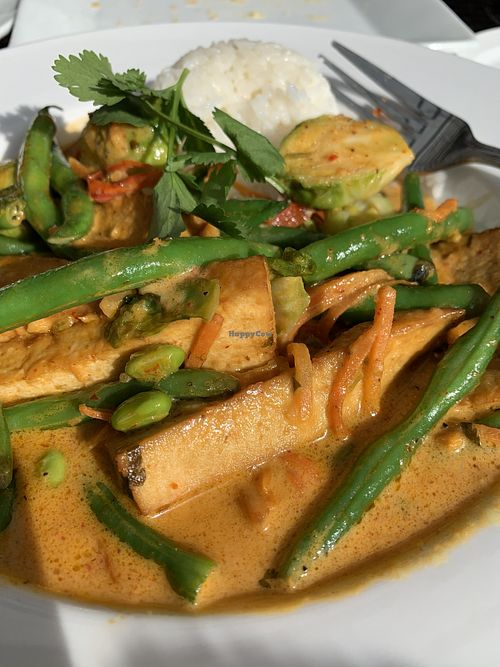
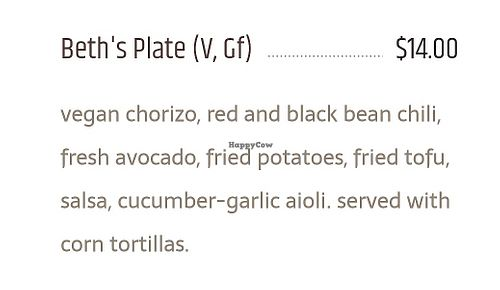

Clementine


American • [Tag 2] • Vegan
- Downtown local cafe that offers both food and offers a light atmosphere with live music and late-night entertainment.
- Offers many labeled vegan options on the menu such as sweet potato fries or curry burger. Many menu items able to be made vegan upon request.